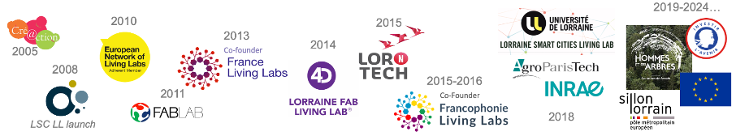

Lorraine Smart Cities Living Lab -LSCLL-
L’Université de Lorraine au service des citoyens et des territoires
Living lab at l’Université de Lorraine
The Université de Lorraine supported and developed Living Lab in the Grand Est region since 2008!
Based on the universality of the university and its multidisciplinarity, the Lorraine Smart Cities Living Lab (LSCLL) experiments in terms of projects, governance and support platform.
The Lorraine Smart Cities Living Lab is a collaborative resource centre of the Université de Lorraine, to support and link the various thematic and territorial labs integrating users and implementing collaborative approaches in the service of Research, Development of Innovations, Training and a Citizen Culture. The LSCLL seeks to develop Public Private Population Partnerships (PPPPs) to disseminate innovation and related practices.
The LSCLLL brings together several teams from the University of Lorraine. In 2018, INRAE Grand Est and AgroParisTech centre de Nancy joined the governance of the LSCLL as part of the national “Territories of Innovation” challenge with the “Des Hommes et des Arbres” project.
It experiments, develops and capitalizes on a dynamic of universality based on:
- A legally neutral university space
- A third party guarantor
- A university foundation: NIT Foundation
- A Fab Living Lab Engineering proposing an integrated process: 2D - Ideation; 3D - Materialization ; 4D Test by use
- Open Citizen Labs engineering, for: Facilitate access to places where users and citizens are present; Involve them in all stages of a project
It covers: 5 Issues for innovative territories:
- The Man / Nature Relationship
- The Digital Transition
- The Energy and Ecological Transition
- The Art of Living and Moving
- Health and well-being at all stages of life
Some projects
Since 2019, Lorraine Smart City living Lab support several National or European projects involving the Université de Lorraine:

- LAUDS Factories - (2024-2026) Local Accessible Urban Digital and Sustainable Factories: New European Bauhaus Approach to Open and Decentralised Urban Manufacturing - Co-funded by the European Union, 2024-2026, GA 101135986
- CLIMATE LABS - Erasmus+ project Strengthening applied research and innovation capacities in Latin-America through co-creation labs for mitigation and adaptation to Climate Change
- INEDIT (open INnovation Ecosystems for Do It Together process) - The H2020 EU-funded INEDIT project will create an ecosystem to transform the DIY approach within FabLabs into a professional “DIT” approach involving users, suppliers, etc.
- SMAGRINET - a EU capacity building project empowering smart grid experience in Europe.
- “Des Hommes et des Arbres - DHDA” (Humans & Trees) project - In this project involving more than 100 regional partners, the Living lab approach supports the network of “DHDA” relay structures and places with the public (e.g. LF2L, Forest Inn Lab, Citique, etc.) DHDA is one of the 24 national winners of the French PIA3 (Investment in the Future Programme) action “Territoires d’innovation” (Territories of Innovation).
- AILES (Accompagnement à l’intégration des lycéens dans l’enseignement supérieur) - a Living Lab approach to co-create innovative digital solutions with high schools, guidance services and universities to improve high school guidance. Winner of the French PIA3 (Investment in the Future Programme) action “Territoires d’innovation pédagogique” (Territories of Pedagogical Innovation)
A recognized Living Lab, the result of the actors who make it up
Designed from 2008, by the ERPI laboratory team in partnership with local socio-economic actors, the LSCLL is the LL of the Université de Lorraine. It was recognized and accredited in 2010 by ENoLL, the European Living Lab network. In 2013, and in 2015, the LSCLL became a co-founding member of France Living Labs and Francophonie Living Labs.
The LSCLL is a “project mode” led by the ERPI laboratory, with governance open to local actors interested in innovation through use at the service of citizens. The LSCLL does not have its own legal structure. It is the result of the pooling of the resources of actors who wish to collaborate together on a theme, a mechanism, a research question involving users in the development of responses to societal challenges.
The term “Lorraine” refers to the initial territory of anchorage, it corresponds to the territory of the Université de Lorraine, and works with all continents. The notion of “Smart Cities” is understood in the very broad sense covering all the possible themes of territories, their challenges and the transitions they face. In 2010-2011, the Lorraine Smart Cities Living Lab received support from the DIRECCTE Lorraine and the Lorraine Region on the basis of European funding (ERDF). Since 2011, the LSCLL has been funded by the ERPI laboratory’s research projects.

Summary of the main results (2008-2017)
More than 150 Scientific publications, thesis, reports: fundamentals and methodologies, capitalisation and dissemination (see: Rubriques Publications).
11 PhD theses defended:
- L. Dupont : 2009 - Transferring industrial engineering to urban engineering: towards a collaborative approach to urban projects,
- N. Skiba : 2014 - User-centred innovation process: identifying needs and interpreting data from user integration in the co-design process,
- J. Hubert : 2017 - Integrating the point of view of users and citizens into the innovation process: the case of the deployment of an electric mobility system in the Lorraine region (Sillon Lorrain),
- A. Convolte : 2018 - Encouraging the adoption of active mobility: a proposal for a user-centred design approach to support a region in developing its transport policies,
- J. Lacroix : 2019 - The Urban Living Lab approach to driving innovation in urban planning? A contribution to the design of an urban innovation management system: application to the “Opération d’Intérêt National d’Alzette Belval”,
- G. Tran : 2019 - From “shared diagnosis” to “shared action”: how the Living Lab project mode can feed the decision-making process of “making the city” by integrating citizens for a smart city,
- F. Osorio : 2021 Management of innovation laboratories: A methodological approach to the design of strategic intent,
- L. Acosta : 2021 - Improvements to models and methods for assessing the acceptability of innovative solutions. Applications in the context of home care for the elderly,
- M. Arnould : 2021 - Construction of a methodological reference framework for managing forestry Living Labs,
- A. Hily : 2022 - Systematic design and evaluation of immersive environments to support Living Lab projects,
- L. Delagado : 2022 - Designing innovation spaces in universities: a tool to help manage Academy-Industry projects,
3 doctoral projects in progress:
- [G. Pronost] (https://theses.fr/s290706) : Thesis in progress since 2020 - Design of the Digital Twin of a project in Living Lab mode,
- F. Pruvot : Thesis in progress since 2021 - Contribution of a repository of territorial impact indicators to facilitate the networking of innovation spaces and proposal of scenarios,
- M.O. Amimi : Thèse en cours depuis 2021 - Designing, modelling and testing an integrated innovation process and its interaction with the urban project process. Application to the Innovation Campus project of the Communauté de Communes du Bassin de Pompey
A research project with EDF.
A collaborative Chair: the REVES Chair (2014-2019) supported by ENEDIS, EDF, the Greater Nancy Metropolitan Area and the University of Lorraine.
Guest of honour at the International Fair of Nancy in 2017 (36 m2 stand), 2018 (90 m2 stand), 2019 (250 m2 stand) to deploy the Open Citizen Labs,
The Lorraine Fab Living Lab® Platform: collaborative innovation space, new generation scientific instrumentation at the service of participatory science.
A training module at TELECOM Nancy: “Artificial Intelligence and Big Data” for Smart Cities
The co-founding of the Réseau France Living Labs in 2012-2013 and the Francophonie Living Labs network in 2015 (with the support of the Consulate General of France in Quebec City)
Ingexys Innovation Workshops, operational since 2009
The European LILA Project with Promotech CEI: International product or service test (2012-2013)
Dozens of Demonstrators: M-Learning, La Fabrique Nancy Grand Cœur, 3D traffic flow simulation, Muséum-Aquarium de Nancy, Smart City Living Lab d’Alzette-Belval, Linky by Makers, VélOstan Connectés, etc. (dedicated pages to come)
Dozens of conferences and testimonies in France and abroad
The sponsorship of several Living Labs now recognized: Technoport in Luxembourg, Aktan in Orléan
Support in the development of innovation spaces in the Greater East Region: ex TUBA in Mulhouse, Pole Territorial Innovation in Dieuze, etc., in Colombia (ViveLabs network), in Canada, etc.
Contacts
Laurent Dupont, Ing., Dr., scientific coordinator : l.dupont {at} univ-lorraine.fr